Карта респауна рейд-боссов Lineage 2 Interlude
20 lvl90 lvl

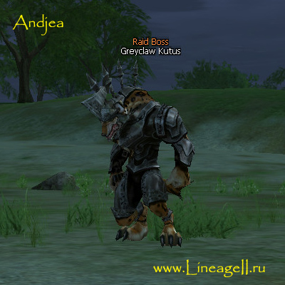
Рейд-Босс (Lvl: 23)
Солдат из Осужденных Наемников, известных своей храбростью, проявленной во время войны Адена и Грации. Сейчас этот герой принял командование Осужденными Наемниками Грации, а точнее – их остатками на территории Королевства Аден. Его люди расположились в Глудио, и он ждет возможности вернуться на родину.

 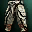
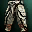
 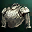
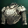
 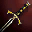
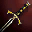

подробнее: https://linedia.ru/interlude/npcs/25001
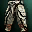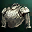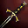подробнее: https://linedia.ru/interlude/npcs/25001

Рейд-Босс (Lvl: 30)
Командир Наемников Кату. Склонный к вспышкам гнева без причины, он получает особое удовольствие от сражений с Эльфами и Темными Эльфами. Он плюет на свой внешний вид и условности культурного общения, так что многие считают его слегка тронутым.
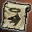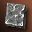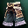


подробнее: https://linedia.ru/interlude/npcs/25004
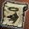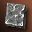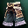подробнее: https://linedia.ru/interlude/npcs/25004
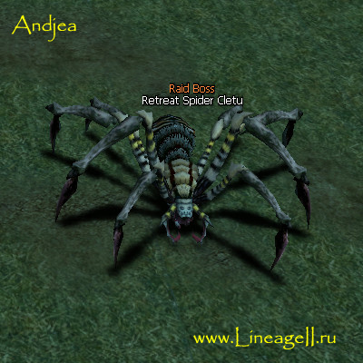
Рейд-Босс (Lvl: 42)
Нечистый Паук, когда-то живший на Пустошах, пока Белеф был свободен. Когда же он был заключен, Паук был изгнан колонией Муравьев, усиленных магической энергией Пустошей. Он был вынужден отступить, но поклялся, что однажды он их уничтожит и будет пировать на их костях. Он постепенно набирается сил и точит когти для мести..
 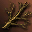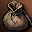
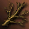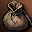
 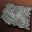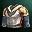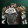
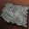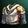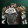 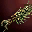
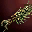
подробнее: https://linedia.ru/interlude/npcs/25007
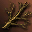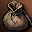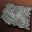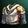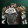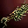подробнее: https://linedia.ru/interlude/npcs/25007
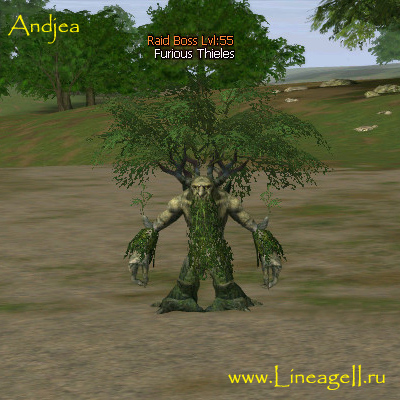
Рейд-Босс (Lvl: 55)

Древень, который жил на юге от Глудио., любил деревья и природу. После войны с Белефом его прекрасный лесной дом был уничтожен, а друзья – убиты. Глубоко потрясенный этой потерей, сейчас он полон ненависти, безумия и жажды мести. Подстегиваемый гневом, в своем воображении он все еще находится на войне против людей и мистиков.
 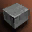
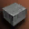


подробнее: https://linedia.ru/interlude/npcs/25010
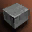подробнее: https://linedia.ru/interlude/npcs/25010
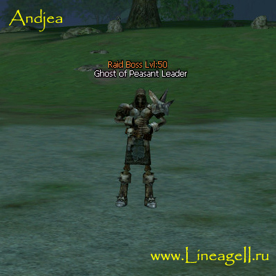
Рейд-Босс (Lvl: 50)


Один из предводителей крестьян, сопротивлявшихся беспощадному правлению Повелителя Эштона. Он был схвачен и жестоко казнен его кровожадными солдатами, но даже это его не остановило. Чтобы свергнуть Эштона, он договорился с Дьяволом и вернулся к жизни. Но этот пакт превратило его когда-то благородные устремления в прах, обернув его самого в монстра, владеющего силой магии Зла..


подробнее: https://linedia.ru/interlude/npcs/25013
подробнее: https://linedia.ru/interlude/npcs/25013
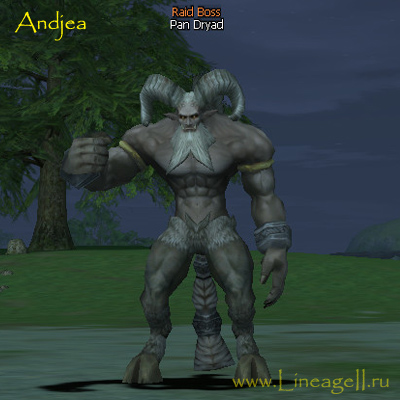
Рейд-Босс (Lvl: 25)

Пан, который был давним другом Эльфов и охранял древний Лес Эльфов. Паны оставались в стороне во время войны Эльфов и темных Эльфов, и в итоге оба племени обратились против них. Паны спрятались после того, как пострадали от жестоких атак с обеих сторон. И только Паны Дриады все еще остаются здесь, ожидая возвращения золотого века мира.


 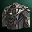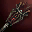
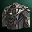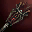
подробнее: https://linedia.ru/interlude/npcs/25019
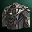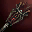подробнее: https://linedia.ru/interlude/npcs/25019

Рейд-Босс (Lvl: 34)

Талантливейший Темный Маг Орков, когда-то известный под именем "Надежда племени Орков Брека". Но он был вовлечен в заговор против вождя и потому изгнан. И теперь он мечтает о дне, когда появится возможность отомстить предателям. Он становится все сильнее, использует магию призыва, которой он научился у Темных Эльфов, обязывая могущественных существ служить себе.
 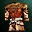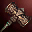
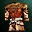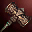
 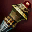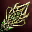
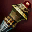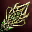
подробнее: https://linedia.ru/interlude/npcs/25020
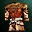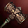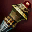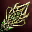подробнее: https://linedia.ru/interlude/npcs/25020
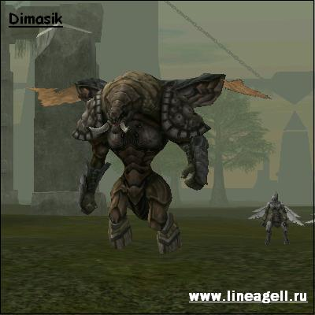
Рейд-Босс (Lvl: 34)
Безжалостная Королева Болотных Стакато, обитающая далеко в Болотах Крума. Печально известная своим бессердечием, она одинаково жестоко относится как к своим союзникам, так и к врагам. Она приказывает казнить каждого, кто дерзнет противостоять ей, включая своих подчиненных и детей. Однажды Королева жаждет создать Империю Болотных Стакато.
 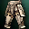
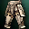 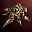
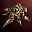
подробнее: https://linedia.ru/interlude/npcs/25023
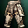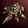подробнее: https://linedia.ru/interlude/npcs/25023
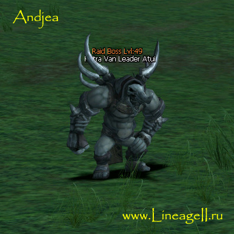
Рейд-Босс (Lvl: 49)
Командир передовых сил мощного племени Орков Кетра родом из Королевства Эльмор. Он свято верит в превосходство своего племени. Его миссией было расширение границ влияния племени на Королевство Аден. Являясь опасным врагом, он питает одинаково огромное отвращение и к Фавнам, и к Людям..
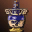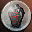


 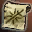
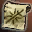
подробнее: https://linedia.ru/interlude/npcs/25026
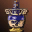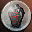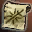подробнее: https://linedia.ru/interlude/npcs/25026

Рейд-Босс (Lvl: 53)
Могущественный, мутировавший Монстроглаз. Некоторые ученики полагают, что он достиг финальной ступени эволюции вида Монстроглазов. Они крайне умны и высокомерны. Годы назад он убежал от Аргоса, Прародителя Монстроглазов, и направился на юг. Он размышляет, планирует и плетет интриги, надеясь однажды завладеть силой Аргоса. Он полагает, что становится сильнее, поедая мозги других разумных существ, при том питается он частенько.


 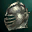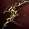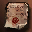
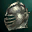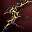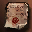
подробнее: https://linedia.ru/interlude/npcs/25029
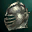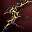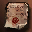подробнее: https://linedia.ru/interlude/npcs/25029
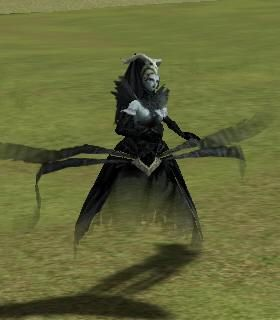
Рейд-Босс (Lvl: 58)
Верный стражник, защищающий Сад Евы – место отдыха богини Евы. Времена года менялись множества раз с тех пор, как Ева навещала смертных последний раз, но он остается на посту, чтобы защитить Сад от грабителей, который могу пожелать ограбить священную усыпальницу богини.
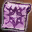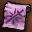 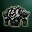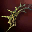
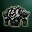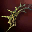
подробнее: https://linedia.ru/interlude/npcs/25032
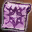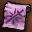
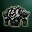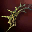подробнее: https://linedia.ru/interlude/npcs/25032

Рейд-Босс (Lvl: 70)
Жнец – паж Богини Смерти Шилен. Жнец занимается сбором бесчисленных душ, бродящих по земле, и доставляет их в подземный мир Шилен. Его преданность Шилен абсолютна и он старается держаться ближе к Печати Шилен, чтобы служить своей Богине еще лучше. Он прилежно выполняет свой долг, ожидая дня, когда Шилен восстанет из мертвых.

") 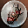
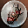


подробнее: https://linedia.ru/interlude/npcs/25035
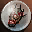подробнее: https://linedia.ru/interlude/npcs/25035
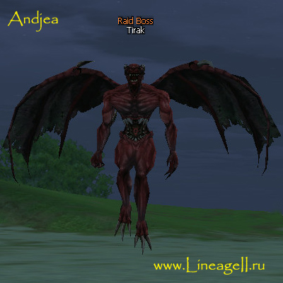
Рейд-Босс (Lvl: 28)
Слуга Рыцаря Бариона, получивший тело демона с помощью темной магии Дьявола Кернона. Его гнев, обращенный на Генерала Карте и его верного офицера Бариона, которые, как он считает, сделали его демоном, продолжает расти. Чего он не знает, так это того, что его ненависть имеет магическую природу и подпитывается махинациями Дьявола Кернона.


 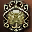
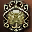 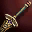
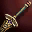
 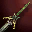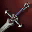
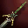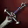
подробнее: https://linedia.ru/interlude/npcs/25038
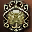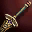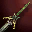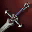подробнее: https://linedia.ru/interlude/npcs/25038
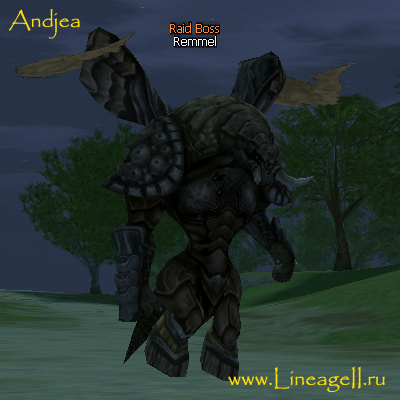
Рейд-Босс (Lvl: 35)
Повелитель Болотных Стакато находится под ментальным управлением Дьявола Раххи. Он усиливает армию Стакато для Раххи. Он заклятый враг Королевы Джеруны из Болотных Стакато, живущих в Болотах Крума.
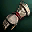 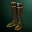
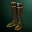


подробнее: https://linedia.ru/interlude/npcs/25041
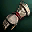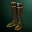подробнее: https://linedia.ru/interlude/npcs/25041

Рейд-Босс (Lvl: 47)
Рыцарь Эльмора, Командир солдат, исследующих Башню Дерзости по повелению Генерала Карте. Правая рука Генерала, смелый рыцарь, готовый отправиться в Ад, если ему прикажут. Его плоть бессмертна, и он получает таинственные возможности от Дьявола Рахха, давшего ему наказ не спускать глаз с Тирака..


 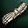
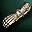

подробнее: https://linedia.ru/interlude/npcs/25044
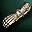подробнее: https://linedia.ru/interlude/npcs/25044

Рейд-Босс (Lvl: 49)
Генерал Эльмора, получивший благодаря договору с Дьяволом Керноном бессмертное тело. Упрямый до глупости, он противостоял возведению Башни Дерзости. Его мировоззрение уберегло его от гнева Эйнхасад. Тем не менее, он потерял своего короля и свою страну. Он презирает тех, кто предал законного повелителя и построил собственное королевство. Как верный слуга империи, он мечтает о том дне, когда он сможет найти истинного короля и служить ему..
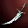
подробнее: https://linedia.ru/interlude/npcs/25047
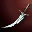подробнее: https://linedia.ru/interlude/npcs/25047
Рейд-Босс (Lvl: 51)
Доверенное лицо Дьявола Кернона, он горячий и жестокий дьявол. Он подавляет врагов своей невероятной силой и гигантскими размерами. В данное время он изучает внутренние помещения Башни Дерзости под командованием Кернона. Простой воин дьяволов, искренне верящий в то, что слепая преданность будет вознаграждена в случае, если Хозяин преуспеет в своих делах.

подробнее: https://linedia.ru/interlude/npcs/25050
подробнее: https://linedia.ru/interlude/npcs/25050

Рейд-Босс (Lvl: 65)
Ассистент Повелителя Смерти Халлета, красивая и умная. По сути она функционирует как слуга Дьявола Кернона, отвечающая за Башню Дерзости. Она воистину доверенное лицо Халлета и его любовница. Она чувствует зреющий заговор Дьявола Кернона и потому незаметно следит за ним.


подробнее: https://linedia.ru/interlude/npcs/25051
подробнее: https://linedia.ru/interlude/npcs/25051
Рейд-Босс (Lvl: 75)
Слуга Повелителя Смерти Халлета, он ищет и впитывает тайны, прячущиеся в Башне Дерзости. Он стремится занять место Халлета, истощенного конфликтом с Баюмом, и стать Повелителем Смерти. Он также предложил свои услуги Генералу Карту из Эльморедена.


подробнее: https://linedia.ru/interlude/npcs/25054
подробнее: https://linedia.ru/interlude/npcs/25054

Рейд-Босс (Lvl: 45)

Питомец великолепного мистика, Сартуна из Эльморедена, заточенного из-за чрезмерной зависти к врагам. Существо оправдывает репутацию хозяина, оно чрезвычайно сообразительно и игривое до жестокости. Оно же вместе со своими многочисленными миньонами является причиной разорения и грабежей на проселочных дорогах.


подробнее: https://linedia.ru/interlude/npcs/25057
подробнее: https://linedia.ru/interlude/npcs/25057
Рейд-Босс (Lvl: 24)
Грустная леди, превращенная в суккуба влиянием зловещего проклятия Мистика. Она любила принца из семьи Валтнера из Глудио. Тем не менее, ее обманом вовлекли в интригу, итогом которой стало убийство принца. Теперь она питается силами путешественников, направляющихся в Глудио, откладывая свою смерть день за днем.

подробнее: https://linedia.ru/interlude/npcs/25060
подробнее: https://linedia.ru/interlude/npcs/25060

Рейд-Босс (Lvl: 35)
Лидер Орков Турек славится сильным духом, храбростью и мудростью. Он ушел с передовой и теперь живет в дальней части лагеря, давая советы нуждающимся. Обычно пребывающий в запасе, он никогда не уклоняется от битвы, если есть необходимость сражаться.


подробнее: https://linedia.ru/interlude/npcs/25063
подробнее: https://linedia.ru/interlude/npcs/25063
Рейд-Босс (Lvl: 40)
Мистик Ящеров, который правит Ящерами Делу с помощью озарений и мудрости. Он говорил, что в свое время обучался у Хардина. В молодости он всегда ратовал за мир с расой людей, но они оставались слепы и враждебны, несмотря на его мирные намерения и поступки. С течением лет он обозлился на человеческую глупость и объявил войну всем и каждому чужестранцу, посмевшему ступить на территорию его племени.


подробнее: https://linedia.ru/interlude/npcs/25064
подробнее: https://linedia.ru/interlude/npcs/25064
Рейд-Босс (Lvl: 52)
Главарь Сфинксов Красного Флага, ждущий возможности захватить власть над Твердыней Разбойников. Он чертовски горд тем, что является одним из Сфинксов. Несмотря на то, что он умен, горяч и храбр, он все еще молод и продолжает набираться сил. Он подбадривает себя мыслью, что однажды станет основателем королевства Сфинксов.


подробнее: https://linedia.ru/interlude/npcs/25067
подробнее: https://linedia.ru/interlude/npcs/25067

Рейд-Босс (Lvl: 55)
Стражник Древень, защищающий границы леса под командованием Королевы Фей Тиминиэль. Он не терпит чужаков и никогда не простит никого из тех, кто нарушает законы леса. С силой, данной ему Королевой Тиминиэль, он может призывать сильфов и единорогов на помощь в защите Волшебного Леса.


подробнее: https://linedia.ru/interlude/npcs/25070
подробнее: https://linedia.ru/interlude/npcs/25070

Рейд-Босс (Lvl: 69)
Создание Дракона Земли Антараса, чье тело запятнано кровью бесчисленных нарушителей, которых он убил, защищая Подземелья Драконов от незваных пришельцев, которые могут пробудить Дракона Земли от его глубокой дремы. Его называют Кровавым Жрецом Рудельто.
подробнее: https://linedia.ru/interlude/npcs/25073
подробнее: https://linedia.ru/interlude/npcs/25073

Рейд-Босс (Lvl: 25)
Принцесса, которой так не повезло быть превращенной в огромную лягушку проклятием злого мага Вижая. Принцесса Морланг была дочерью Рауля – Короля Объединения. Ее красота была известна по всему королевству. Молва говорит, что темный маг Вижай проклял ее, потому что она отвергла его любовь.


подробнее: https://linedia.ru/interlude/npcs/25076
подробнее: https://linedia.ru/interlude/npcs/25076

Рейд-Босс (Lvl: 30)
Главарь самой известной в Глудио шайки бандитов. Он однажды объявил, что украдет самый красивый, бессмертный и ценный предмет мира. И некоторые поговаривают, что с тех пор он пытается украсть сердце прекрасной эльфийки Поэзии.


подробнее: https://linedia.ru/interlude/npcs/25079
подробнее: https://linedia.ru/interlude/npcs/25079

Рейд-Босс (Lvl: 39)

Лидер банды котов, состоящей их животных, покинутых хозяевами. Известны ловлей свежей рыбы прямо из сетей Рыбаков, и Ассоциация Рыбной Торговли предложила хорошую награду за них. Многие охотники пытались поймать этих зверюшек, но быстро сдались, потому что кошки были слишком милы.


подробнее: https://linedia.ru/interlude/npcs/25082
подробнее: https://linedia.ru/interlude/npcs/25082

Рейд-Босс (Lvl: 44)
Главный Рейнджер Тайк Орков, пришедший с горы в поисках Бека, дезертира, убившего своего товарища солдата. Не смотря на то, что с ним обходятся, как с хулиганом или дрянью, который ищет предателя в своих рядах, он гордится своим делом и считает себя кем-то, кто делает необходимую для племени работу.


подробнее: https://linedia.ru/interlude/npcs/25085
подробнее: https://linedia.ru/interlude/npcs/25085
Рейд-Босс (Lvl: 43)
Механический голем, которого отчаянно ищет Гильдия Черной Наковальни. Самая совершенная модель. Когда его оживили, он взбесился потому, что изобретатель случайно установил бракованный компонент. Он частично разрушил лабораторию, раздавил многих Гномьих изобретателей, пытавшихся его угомонить, а затем убежал из города и теперь бесцельно бродит по лесам и кидается на каждого, кто оказывается рядом.


подробнее: https://linedia.ru/interlude/npcs/25088
подробнее: https://linedia.ru/interlude/npcs/25088

Рейд-Босс (Lvl: 59)
Дикий кабан, чья душа была украдена во время эксперимента злого мистика, превращенный тем самым из зверя в машину для убийства. Существо убило мистика, но этот поступок в итоге уже не мог успокоить кабана. Он ищет могущественную сущность, способную упокоить его дух.


подробнее: https://linedia.ru/interlude/npcs/25089
подробнее: https://linedia.ru/interlude/npcs/25089

Рейд-Босс (Lvl: 70)
Изгнанный главарь Фавнов Хелтора. Фанатичный последователь Баюма, он полагает, что Баюм должен быть воскрешен, после чего все другие племена будут стерты с лица континента. Одинокий в своей вере, он со своими миньонами обыскивает Башню Дерзости в поисках способа воскресить божество.


подробнее: https://linedia.ru/interlude/npcs/25092
подробнее: https://linedia.ru/interlude/npcs/25092

Рейд-Босс (Lvl: 29)
Призрак Эльфа, любившего лес и поклявшегося защищать природу и животных от бессердечности войн. В итоге эльф был убит во время исполнения своего долга, но вернулся в качестве призрака. Ему помогает и защищает стая диких кабанов, верных ему. Он зол на незнакомцев – ведь они могут принести с собой войну в лес.


подробнее: https://linedia.ru/interlude/npcs/25095
подробнее: https://linedia.ru/interlude/npcs/25095

Рейд-Босс (Lvl: 35)
Слуга Призывателя Седжара, посланный магами Башни Слоновой Кости противостоять Дьяволу Белефу. Седжар использовал темную силу для заточения Белефа, но был убит его отражающими силами. Фантом, один из призванных Седжаром слуг, пережил смерть Призывателя, но попал под власть чар Белефа и Башни Слоновой Кости, после чего стал частью Пустошей. Несмотря на то, что он считает смерть своего хозяина несправедливой, он уничтожает других мистиков.

подробнее: https://linedia.ru/interlude/npcs/25098
подробнее: https://linedia.ru/interlude/npcs/25098
Рейд-Босс (Lvl: 35)
Слуга Призывателя Седжара, посланный магами Башни Слоновой Кости противостоять Дьяволу Белефу. Седжар использовал темную силу для заточения Белефа, но был убит его отражающими силами. Фантом, один из призванных Седжаром слуг, пережил смерть Призывателя, но попал под власть чар Белефа и Башни Слоновой Кости, после чего стал частью Пустошей. Несмотря на то, что он считает смерть своего хозяина несправедливой, он уничтожает других мистиков.
подробнее: https://linedia.ru/interlude/npcs/25098
подробнее: https://linedia.ru/interlude/npcs/25098
Рейд-Босс (Lvl: 44)
Страшное растение, питающееся ядом Моря Спор. Оно послушно следует воле Олфена, Правителя Моря Спор, который отдал приказ уничтожать вторгающихся в его земли людей. Из Башни Слоновой Кости были высланы мистики, которые должны были разработать магическое силовое поле, препятствующее распространению спор. Но многие из них были убиты Трухлявым Древом.


подробнее: https://linedia.ru/interlude/npcs/25099
подробнее: https://linedia.ru/interlude/npcs/25099

Рейд-Босс (Lvl: 45)
Фавн Шакрам, учившийся у мистиков Башни Слоновой Кости, стал жертвой эксперимента и был обезображен. Он получил власть над силами природы, но его внешность была так сильно обезображена, что он не мог вернуться в свое племя. Он двинулся в Город Орен, где спрятался в пустынной долине на юге, чьи запутанные горные тропы у большинства отбивали охоту даже думать о том, чтобы туда заглянуть. Там он взращивает ненависть к мистикам Башни Слоновой Кости, которые его изуродовали.

подробнее: https://linedia.ru/interlude/npcs/25102
подробнее: https://linedia.ru/interlude/npcs/25102

Рейд-Босс (Lvl: 55)
Могущественный колдун, очень уважаемый среди Ящеров. В данное время он уединился в отдаленном уголке равнин. Он возмущен тем, что люди смеют продолжать вторжение на территорию Ящеров, где они они жили в мире с незапамятных времен.


подробнее: https://linedia.ru/interlude/npcs/25103
подробнее: https://linedia.ru/interlude/npcs/25103

Рейд-Босс (Lvl: 60)
Деревенский шаман, ставший свидетелем того, как воины Эльмора отравили колодец, и закрывший на это глаза из страха за собственную жизнь. Тем не менее, когда жители деревни стали умирать один за одним, он осознал всю мерзость своего бездействия и потерял рассудок. И теперь он бродит около отравленного колодца и атакует всех, кто подходит к нему, принимая их за солдат Эльмора.


подробнее: https://linedia.ru/interlude/npcs/25106
подробнее: https://linedia.ru/interlude/npcs/25106
Рейд-Босс (Lvl: 74)
Злая ведьма и еретичка, служащая Антаресу и приносящая в жертву людей во время своих ритуалов. Используя Темное Искусство на свой страх и риск, она могла превращать себя в могущественного духа. Устроенная ею резня привела к тому, что она утратила свою личность и навсегда превратилась в бесплотное создание Зла, вместе со своими миньонами убивающее каждого дерзнувшего потревожить сон Антареса. Впрочем, от поедания еще бьющихся человеческих сердец, сочащихся теплой кровью, это существо получает истинное удовольствие.

подробнее: https://linedia.ru/interlude/npcs/25109
подробнее: https://linedia.ru/interlude/npcs/25109

Рейд-Босс (Lvl: 30)
Язычница с Острова Дьявола, служащая Белефу, которая старается посеять страх в Глудио, окунуть людей в пучину жестокости и предательства. Ужас – источник ее дьявольской силы. Серия недавних убийств, грабежей и поджогов – следствие деятельности Мины.


подробнее: https://linedia.ru/interlude/npcs/25112
подробнее: https://linedia.ru/interlude/npcs/25112
Рейд-Босс (Lvl: 35)
Палач, трудившийся на Земле Казненных во время Крестьянского Бунта и казнивший бесчисленное количество фермеров по приказу Герцога Эштона. В итоге он был убит за свои деяния. Этот идейный мясник был проклят и обречен на вечные скитания, так что и теперь он бродит по Земле Казенных.
подробнее: https://linedia.ru/interlude/npcs/25118
подробнее: https://linedia.ru/interlude/npcs/25118
Рейд-Босс (Lvl: 50)
Глашатай, посланный в Аден Королевой Фей Тиминиэль для того, чтобы потребовать объяснений с ответственных за вторжение в Волшебный Лес. Один из бесстрашных воинов, охраняющих Королеву Фей.

подробнее: https://linedia.ru/interlude/npcs/25119
подробнее: https://linedia.ru/interlude/npcs/25119

Рейд-Босс (Lvl: 56)
Аристократ из Грации, у которого не было возможности вернуться на родину после поражения в войне Адена и Грации, во время которой он заблудился вместе со своими солдатами внутри Башни Крума. Пока он был внутри, ему удалось убедить нескольких титанов присоединиться к отряду. Когда же он наконец выбрался из Башни, война уже закончилась. Все, с чем он остался в итоге – несколько верных слуг и огромная награда, назначенная за его голову. В настоящее время он отчаянно пытается прорваться в Королевство Эльмор, чтобы сохранить свою жизнь.

подробнее: https://linedia.ru/interlude/npcs/25122
подробнее: https://linedia.ru/interlude/npcs/25122
Рейд-Босс (Lvl: 65)
Легендарный гигантский тигр, правящий территорией Водопада Ангелов. Изначально это было божественное существо, направлявшее ангелов на небеса. Но тигр изувечил своего господина и сбежал на землю, где пребывание в отчаянии от жизни, полной страданий, привело его в бешенство. В итоге он пожирает беззаботных путешественников, чей путь проходит через Водопад Ангелов.


подробнее: https://linedia.ru/interlude/npcs/25125
подробнее: https://linedia.ru/interlude/npcs/25125
Рейд-Босс (Lvl: 79)
Будучи одним из Четырех Великих Королей Эльмора, могущественный гигантский Минотавр, по идее, должен быть слугой Баюма. Но связанный древней клятвой, он служит Халлету, Повелителю Смерти. Запертый на верхнем этаже Башни Дерзости, он ждет воскрешения своего господина. В то же время, будучи вовлеченным в противостояние с предводителем ангелов – Шуриэлем, Пламенем Гнева, он сдерживает продвижение ангелов и Платинового Племени.


подробнее: https://linedia.ru/interlude/npcs/25126
подробнее: https://linedia.ru/interlude/npcs/25126

Рейд-Босс (Lvl: 24)
Повелительница Ящеров Лангк, служащая злому духу Бифронсу в обмен на получаемую от него силу. По приказу Бифронса она захватила, а потом казнила священников и верующих, проходящих по южному тракту. Недавно она начала посвящать себя расширению границ влияния племени на севере, пользуясь преимуществом, которое дает хаос в Глудио.

подробнее: https://linedia.ru/interlude/npcs/25127
подробнее: https://linedia.ru/interlude/npcs/25127

Рейд-Босс (Lvl: 33)
Великий Пророк, возглавляющий Орков Вуку. У него больше власти, чем у Главаря Дрико и его почитают так, будто он божественное создание. Ему причиняет страдания необходимость всем племенем кочевать по землям людей. И он надеется однажды привести племя обратно на родные северные земли орков.


подробнее: https://linedia.ru/interlude/npcs/25128
подробнее: https://linedia.ru/interlude/npcs/25128
Рейд-Босс (Lvl: 50)
Капитан Осужденных Наемников из Грации, прозванный Повелителем Бойни. Он могущественный враг Кровавого Повелителя Нурки. Благодаря своим отличным дипломатическим способностям он подружился со многими влиятельными аристократами и должностными лицами, занимающими высокие посты. И дворяне частенько пользуются услугами его солдат, Осужденных. А в ответ Повелитель Бойни использует дворян для осуществления своего плана по возвращению на родину, в Грацию.
подробнее: https://linedia.ru/interlude/npcs/25131
подробнее: https://linedia.ru/interlude/npcs/25131

Рейд-Босс (Lvl: 40)
Старый вождь, возглавлявший Ящеров Лето последние несколько десятилетий. Несмотря на преклонный возраст, он все еще силен и мудр. Он понимает, что его племя не способно вернуть свою родину в открытом бою против Королевства Аден, потому он ждет удобного момента для нанесения удара. Он надеется использовать наступающую смуту, чтобы вновь завладеть исконными территориями Ящеров Лето.


подробнее: https://linedia.ru/interlude/npcs/25134
подробнее: https://linedia.ru/interlude/npcs/25134
Рейд-Босс (Lvl: 55)
Женщина, вступившая в сделку с Дьяволом Белефом ради обретения власти. Благодаря его учению она получила возможности могущественного мистика. И сейчас она ищет логово Белефа, предположительно скрытое под землей на юге Пустошей Глудио, чтобы воскресить его с помощью тайного ритуала.
подробнее: https://linedia.ru/interlude/npcs/25137
подробнее: https://linedia.ru/interlude/npcs/25137

Рейд-Босс (Lvl: 65)
Разновидность устройств для контроля умственной деятельности – наследия древней цивилизации гигантов. С его помощью гиганты намеревались править другими разумными существами, но изобретение в итоге использовалось против создателей и контролировало рабов из расы гигантов после того, как их культура пришла в упадок. Аналогично Ядру в Башне Крумы, это форма жизни с искусственным интеллектом, способным управлять рабами.


подробнее: https://linedia.ru/interlude/npcs/25140
подробнее: https://linedia.ru/interlude/npcs/25140

Рейд-Босс (Lvl: 78)
Лидер авангарда ангелов, наказавших Баюма и разрушивших Башню Дерзости. Он активно трудился над тем, чтобы отбросить дьяволов, проломившихся сквозь ее верхние этажи и вел Псоглавов из Платинового Племени в бой против дьяволов за контроль над Башней. Его называют Пламенем Гнева за то, что он применяет свой меч без тени сомнения, жалости и милосердия.

подробнее: https://linedia.ru/interlude/npcs/25143
подробнее: https://linedia.ru/interlude/npcs/25143
Рейд-Босс (Lvl: 21)
Живущий на юге от Глудио Злой Дух, которому Ящеры Лангк поклонялись, приняв его за бога. Он похож на змею и правил миром духов ящеров сотни лет. Но он возмущен проклятым телом, которым боги его одарили, и пытается убивать посланников богов в отместку за их издевку. Он очень зол и горит желанием уничтожить Глудио с помощью Ящеров Лангк.


подробнее: https://linedia.ru/interlude/npcs/25146
подробнее: https://linedia.ru/interlude/npcs/25146

Рейд-Босс (Lvl: 25)
Рыцарь, который до вступления Грации в войну управлял мирным городом, ныне известным как Руины Страданий. При жизни его знали как сэра Гриндела, которого взяли в плен после поражения в битве с Армией Грации и пытали до смерти. Приспешники Белефа, скрывающиеся в Башне, украли его тело и воскресили сэра Гриндела, поработив его душу. Потеряв представление о рыцарской чести и чувство самопожертвования, он превратился в дьявола и пытается разделить свою боль с каждым, кто попадается ему на пути бесконечных скитаний по Руинам Страданий.

подробнее: https://linedia.ru/interlude/npcs/25149
подробнее: https://linedia.ru/interlude/npcs/25149

Рейд-Босс (Lvl: 35)
Дьявол с низших уровней, по ошибке призванный Королем Шаманов Селу. Из-за принудительного вызова он утратил возможность вернуться к своей родной расе. Скрывая свое происхождение, он атакует путешественников и собирает их души, чтобы обрести необходимые для возвращения силы.
подробнее: https://linedia.ru/interlude/npcs/25152
подробнее: https://linedia.ru/interlude/npcs/25152

Рейд-Босс (Lvl: 40)
Будучи правителем племени Орков Селу, он сошел с ума после провала опасного эксперимента с заклинанием вызова, которое создал сам. Называя себя Королем Шаманов, он оставил племя и с группой столь же безумных последователей и теперь грабит беззащитных путешественников. У него есть кое-какие навыки в искусстве магии, но, мягко говоря, он переоценивает собственные способности.
подробнее: https://linedia.ru/interlude/npcs/25155
подробнее: https://linedia.ru/interlude/npcs/25155
Рейд-Босс (Lvl: 48)

Глупый человек, который не смог подавить страстную тягу к запретным для людей знаниям и пытался изучить магию драконов, в одиночку навестив Антараса – Дракона Земли. Он превратил смертного в чудовище за то, что жалкий смертный потревожил его сон. И теперь, являясь отвратительным существом, человек ненавидит все прекрасное и про себя проклинает Антараса, в то же время оставаясь до глубины души напуганным могуществом дракона.


подробнее: https://linedia.ru/interlude/npcs/25158
подробнее: https://linedia.ru/interlude/npcs/25158

Рейд-Босс (Lvl: 54)
Единорог, бесцельно шатающийся по миру с тех пор, как Эра Мифов кончилась вместе с терпением богини Эйнхасад, обрушившей свой гнев на Титанов. Предводитель единорогов потерял своих сородичей. Не смотря на то, что он отчаянно ищет своих братьев, сотни лет прошли с тех пор, как он от них отделился. Странствуя в одиночестве, единорог так и не смог приспособиться к человеческому миру.
подробнее: https://linedia.ru/interlude/npcs/25159
подробнее: https://linedia.ru/interlude/npcs/25159
Рейд-Босс (Lvl: 60)
Неисправное оружие, созданное мистиками Башни Слоновой Кости, напуганными возможностью воскрешения Дьявола Белефа. Оно не не стало подчиняться командам своих создателей и в итоге покинуло Башню. Сделанное похожим на Титанов, оно искало подобных себе долгие годы, исследуя останки цивилизации древних Гигантов. В конце концов оно пришел к выводу, что является единственным истинным Титаном, пережившим катастрофу, и теперь жаждет отомстить богам, повергшим Титанов.
подробнее: https://linedia.ru/interlude/npcs/25162
подробнее: https://linedia.ru/interlude/npcs/25162

Рейд-Босс (Lvl: 70)

Дрейк, бывший стражником Адена в древние времена, но превратившийся в дьявола возмездия после того, как жадный охотник убил его детеныша. Он оставил Долину Драконов и ушел бродить по близлежащим территориям около Замка Аден, убивая бесчисленное число деревенских жителей. Священников, пришедших охладить его гнев, постигла та же участь. После чего все благие свершения стерлись из хроник Имперским Указом, и теперь этот дрейк известен не иначе, как Несчастье Адена.


подробнее: https://linedia.ru/interlude/npcs/25163
подробнее: https://linedia.ru/interlude/npcs/25163

Рейд-Босс (Lvl: 25)
Изготовленный из тьмы злыми некромантами для исполнения их желаний. Известно, что он тесно связан с луной. Множество исследователей было отправлено мистиками Башни Слоновой Кости для изучения его истинного предназначения, и никто из них не устоял перед темными силами, все они встали на сторону тьмы. С тех пор Башня Слоновой Кости запретила любые дальнейшие попытки изучения Икунтая.

подробнее: https://linedia.ru/interlude/npcs/25166
подробнее: https://linedia.ru/interlude/npcs/25166
Рейд-Босс (Lvl: 30)
Кровожадный лорд и ветеран, известный своими выдающимися победами. Согласно последним слухам, он скрывает намерение свергнуть своего повелителя.


подробнее: https://linedia.ru/interlude/npcs/25169
подробнее: https://linedia.ru/interlude/npcs/25169
Рейд-Босс (Lvl: 38)
Капитан Осужденных Наемников, желающий познать тайны Башни Крума. Услышав песню барда, которая называлась "Семь Тайн Башни Крума", он решил стать рыцарем короля, заполучив древнее оружие, являющееся третьей тайной композиции. Поскольку Хранители Порталов Башни Слоновой Кости отказались его телепортировать потому, что Племя Осужденных - изгнанники, он все еще не проник внутрь Башни, но все время кружит вокруг нее.
подробнее: https://linedia.ru/interlude/npcs/25170
подробнее: https://linedia.ru/interlude/npcs/25170

Рейд-Босс (Lvl: 45)
Храбрый и славный Король Тигров. Несмотря на звериную внешность, он управляет Фавнами благодаря божественному происхождению и бесстрашию. Изначально он был одним из Злых Духов, созданных Шилен, но разучился ненавидеть богов и старался жить согласно своему положению Короля Тигров, набираясь мудрости из года в год. Внутри племени Фавнов он сопровождается верными шаманами.
подробнее: https://linedia.ru/interlude/npcs/25173
подробнее: https://linedia.ru/interlude/npcs/25173

Рейд-Босс (Lvl: 55)
Дева суккуб, прославившаяся за счет имеющегося у нее особого расположения Антараса и получившая силу Дракона Земли. И хотя остается неясным, как она этого добилась, очевидно одно – она обладает смертельной красотой, которая может заманить авантюристов, ищущих дракона, прямо в когти смерти.
подробнее: https://linedia.ru/interlude/npcs/25176
подробнее: https://linedia.ru/interlude/npcs/25176

Рейд-Босс (Lvl: 60)
Еще один подчиненный Глаки. Так же, как и его повелитель, он охраняет Статую Гигантов, но не считает это своим священным долгом. Согласно легенде, Статуя Гигантов может воскресить тело гиганта путем соединения его частей воедино. Причиной, по которой он исполняет свои обязанности, можно было бы считать желание заработать доверие Глаки, если бы не его тайная страсть – мечта обрести совершенное и могучее тело.


подробнее: https://linedia.ru/interlude/npcs/25179
подробнее: https://linedia.ru/interlude/npcs/25179
Рейд-Босс (Lvl: 59)
Дьявол, слуга Белефа, живущий на Острове Дьявола. После того, как Белеф исчез из мира, этот дьявол прекратил всю самостоятельную деятельность и с тех пор отдыхает. Когда же пираты оккупировали Остров и развернули бурную деятельность, он проснулся и пожалел, что не прогнал пиратов до того, как Закен обрел бессмертие. И теперь он ждет возвращения своего повелителя Белефа.
подробнее: https://linedia.ru/interlude/npcs/25182
подробнее: https://linedia.ru/interlude/npcs/25182

Рейд-Босс (Lvl: 35)
Капитан Ящеров Тасаба, живущих в поле Иннадрил. Под командованием Водного Дракона Фафуриона они хранят Землю Святой Воды. Ему горько осознавать, что в мире наступила Эпоха Людей, и он скучает по прошлому. Каждый раз во время полнолуния он служит ритуал, посвященный Водяному Дракону.
подробнее: https://linedia.ru/interlude/npcs/25185
подробнее: https://linedia.ru/interlude/npcs/25185
Рейд-Босс (Lvl: 30)
Зверь, живущий на территории Иннадрил, один из Злых Духов, рожденных болью Шилен. Он ненавидит Еву, ставшую Богиней Воды вместо Шилен, называет ее самозванкой и фальшивкой. Он до сих пор считает настоящей богиней воды Шилен.


подробнее: https://linedia.ru/interlude/npcs/25188
подробнее: https://linedia.ru/interlude/npcs/25188
Рейд-Босс (Lvl: 34)
Он скрылся в Иннадриле, где Культ Евы был широко распространен, и смущал последователей Богини Воды угрозами. Слуга Старейшины Кроноса живет в Деревне Охотников. Чтобы получить ингредиенты для чудесного лекарства счастья, изготавливаемого Кроносом, он пришел в Иннадрил. Потеряв себя в грезах, Маму забыл, зачем сюда пришел, и не вернулся к Кроносу потому, что боялся быть обруганным.
подробнее: https://linedia.ru/interlude/npcs/25189
подробнее: https://linedia.ru/interlude/npcs/25189
Рейд-Босс (Lvl: 43)
Крок, защищавший землю Иннадрил с древних времен. Он жил здесь до того, как Люди и Эльфы пришли сюда и верят в то, что Иннадрил – святая земля, уникальная сама по себе. Он наблюдал за тем, как люди расширяли свои границы год за годом. Крок непоколебимо уверен в том, что должен защищать землю предков.


подробнее: https://linedia.ru/interlude/npcs/25192
подробнее: https://linedia.ru/interlude/npcs/25192

Рейд-Босс (Lvl: 70)
Посланник Дракона Воды дрейк Лох Несс, чьим предком является Фафурион, доставляет сообщения от него Ящерам и Крокам. С тех пор, как Фафурион слегка заинтересовался делами этих двух малых племен, Лох Несс оставил их полагаться на собственное благоразумие. Он презирает существ слабее его.

подробнее: https://linedia.ru/interlude/npcs/25198
подробнее: https://linedia.ru/interlude/npcs/25198

Рейд-Босс (Lvl: 72)
Великий Пророк Ящеров Вируд, страстный последователь Фафуриона. Являясь могущественным шаманом, он верит в то, что Водяной Дракон поведет Ящеров к дню великой славы. Он не знает, что Фафуриона едва волнуют дела его народа.


подробнее: https://linedia.ru/interlude/npcs/25199
подробнее: https://linedia.ru/interlude/npcs/25199
Рейд-Босс (Lvl: 74)
Правитель Кроков, называющий себя Падишей, живет на Острове Аллигаторов. Его охраняет группа элитных телохранителей, подчиняющихся его командам. Однако многие кроки следуют следуют за Драконом Войны вместо него. В то время, как его это злит, он не смеет соперничать с Фафурионом.
подробнее: https://linedia.ru/interlude/npcs/25202
подробнее: https://linedia.ru/interlude/npcs/25202
Рейд-Босс (Lvl: 76)
Посланник Богини Эйнхасад, спустившийся с небес, чтобы наблюдать за поведением Дракона Воды. Он ненавидит Фафуриона, убившего множество его союзников во время Небесной Войны. Но боги запретили ему сражаться с Фафурионом.
подробнее: https://linedia.ru/interlude/npcs/25205
подробнее: https://linedia.ru/interlude/npcs/25205

Рейд-Босс (Lvl: 40)
Злой дух, порожденный отчаянием, горем и яростью Богини Шилен. Хотя он и сражался с богами на стороне Шилен в Эру Мифов, будучи серьезно раненным был взят под защиту Дракона Воды. В последствии прошел слух, что его послали проповедовать о возвращении Шилен. Он служит Фафуриону, ожидая тот день, когда Шилен и Духи Зла будут вновь править миром.

подробнее: https://linedia.ru/interlude/npcs/25208
подробнее: https://linedia.ru/interlude/npcs/25208
Рейд-Босс (Lvl: 36)
Главарь Кроков, правящий Островом Аллигаторов. Как исконный Крок, который жил в Иннадриле еще до прихода людей и эльфов, он ненавидит чужестранцев и пытается защитить как свою территорию, так и племя от них. И несмотря на то, что он недоволен Водным Змеем Атекой, живущим на этом же острове, он ничего не может с этим поделать, потому что боится Дракона Воды Фафуриона. Он мечтает о том дне, когда Кроки будут вновь править Иннадрилом.
подробнее: https://linedia.ru/interlude/npcs/25211
подробнее: https://linedia.ru/interlude/npcs/25211

Рейд-Босс (Lvl: 40)
В качестве доверенного лица Дракона Воды Фафуриона, этот Злой Дух уничтожил бесчисленное количество последователей богов. Прославившись под именем Сики Шторма во время Войны Богов, он является ветераном и захватывающим рассказчиком о событиях минувших дней. Он путешествует по миру и рассказывает истории по поручению Фафуриона.


подробнее: https://linedia.ru/interlude/npcs/25214
подробнее: https://linedia.ru/interlude/npcs/25214
Рейд-Босс (Lvl: 50)
Она была прекрасной дамой родом из уважаемой семьи, но прогневала богиню Эйнхасад своим высокомерием и была превращена в Медузу. Она не смогла приспособиться к своему новому обличью и стала жестоким монстром, вымещающим свою ярость на ближних. Даже ее верного жениха постигла печальная участь – она превратила его в камень и разбила на осколки.
подробнее: https://linedia.ru/interlude/npcs/25217
подробнее: https://linedia.ru/interlude/npcs/25217

Рейд-Босс (Lvl: 73)
Предводитель дьяволов, желающих захватить Башню Дерзости. Он старается обрести тайное знание, скрытое в Башне и использовать ее в качестве плацдарма для расширения сферы влияния дьяволов. Но он потратил слишком много сил, стараясь сломать печать Башни, и ослаб. Он противостоит ангелам и Платиновому племени, защищающим Башню Дерзости под руководством самой Эйнхасад. У дьявола три верных помощника: Кернон, Рахха и Верфа.
подробнее: https://linedia.ru/interlude/npcs/25220
подробнее: https://linedia.ru/interlude/npcs/25220
Рейд-Босс (Lvl: 35)
Наемник, состоявший на службе у повелителя во время Крестьянского Бунта в Дионе. Однажды ему было сказано, что он может обрести вечную жизнь, собирая души и посвящая их Шилен. Убив бесчисленное число невинных крестьян, он вызвал отвращение в Герцоге Эштоне, который в итоге приказал его казнить. Но даже после смерти его желание жить вечно было столь сильно, что он вернулся к подобию жизни в виде нежити. В настоящее время он прячется неподалеку от Замка Дион и убивает людей.

подробнее: https://linedia.ru/interlude/npcs/25223
подробнее: https://linedia.ru/interlude/npcs/25223

Рейд-Босс (Lvl: 62)
Повелитель Псов, которому когда-то принадлежала Твердыня Разбойников. Устав от бесконечной борьбы за территорию, он покинул крепость вместе с верными пророками и участвует в соревновании за Твердыню Разбойников лишь в качестве наблюдателя.
подробнее: https://linedia.ru/interlude/npcs/25226
подробнее: https://linedia.ru/interlude/npcs/25226
Рейд-Босс (Lvl: 75)
Слуга Дракона Ветра Линдвиора был легко ранен во время Войны Богов и отступил в Лес Орен залечивать раны. Его долгое оцепенение закончилось, когда сила Шилен начала излучаться из Башни Дерзости. Он обладает меньшими размерами по сравнению с типичными дрейками и порой его можно спутать с самим Драконом Ветра из-за быстроты его движений.
подробнее: https://linedia.ru/interlude/npcs/25229
подробнее: https://linedia.ru/interlude/npcs/25229

Рейд-Босс (Lvl: 57)
В молодости он стал героем Орков Тимак благодаря тому, что сподвиг силы орков на строительство Заставы Тимак. Благодаря силе тотемов он существенно увеличил продолжительность своей жизни и сейчас является управителем всех Орков Тимак.


подробнее: https://linedia.ru/interlude/npcs/25230
подробнее: https://linedia.ru/interlude/npcs/25230

Рейд-Босс (Lvl: 69)


Из-за пренебрежения своими обязанностями этот пользующийся дурной славой командир невольно способствовал уничтожению гарнизона во время войны между Эльмором и Аденом. Он поступил неумно, впустив союзника Эльмора, злоупотребившего его доверием и отравившего единственный колодец в крепости. Многие солдаты и их семьи умерли и солдаты Эльмора легко преодолели сопротивление обескровленного войска. Обезумев от своей оплошности, Андрас насадил себя на свой меч. Поговаривают, что его призрак до сих пор бродит по развалинам замка.
подробнее: https://linedia.ru/interlude/npcs/25233
подробнее: https://linedia.ru/interlude/npcs/25233
Рейд-Босс (Lvl: 60)

Это древнее существо, являющееся предводителем Астральных Дрейков, уничтожил множество охотников. Кровавая история Деревни Охотников – большей частью его заслуга.


подробнее: https://linedia.ru/interlude/npcs/25234
подробнее: https://linedia.ru/interlude/npcs/25234

Рейд-Босс (Lvl: 72)
Вождь Фавнов Ванор, контролирующий Равнины Славы на востоке от Адена. Во время Объединения под властью Короля Рауля, Кандра согласился подписать мирный договор с людьми. Когда же началась очередная война, он предпринял необходимые меры, чтобы приготовить племя Фавнов Ванор к битве. Слухи говорят, что Король Рауль предлагал мир потому, что боялся общеизвестного умения Кандры обращаться с мечом.
подробнее: https://linedia.ru/interlude/npcs/25235
подробнее: https://linedia.ru/interlude/npcs/25235

Рейд-Босс (Lvl: 59)
Дракон охраняет юго-восточное побережье реки в Лесу Зеркал. Будучи призраком Леса, он упросил Шамана Исирра вернуть его к жизни. Исирр воскресил его в облике дракона и приказал препятствовать чужестранцам переправляться через реку и проходить через лес.
подробнее: https://linedia.ru/interlude/npcs/25238
подробнее: https://linedia.ru/interlude/npcs/25238

Рейд-Босс (Lvl: 55)
Являясь лучшим воином Ящеров Харит, Тамаш, спокойный идеалист, который не отступится от своих целей раньше, чем они будут достигнуты. Ему доверили охранять Водопад Ангелов и он прекрасно защищал Святую Землю Ящеров Харит от всякого сорта монстров и дьяволов.

подробнее: https://linedia.ru/interlude/npcs/25241
подробнее: https://linedia.ru/interlude/npcs/25241

Рейд-Босс (Lvl: 75)
Приписав обнаруженному в Пещере Гигантов Младшему Титану боевые свершения, ученые пытаются уверить всех в том, что он на самом деле настоящий Титан. Пытаясь упрочить свою позицию, они назвали его Последним Младшим Гигантом Олкутом.

подробнее: https://linedia.ru/interlude/npcs/25244
подробнее: https://linedia.ru/interlude/npcs/25244
Рейд-Босс (Lvl: 78)
Он защищает Божественную Статую Гигантов, древнюю реликвию, находящуюся глубоко в Пещере Гигантов. Никто не знает, зачем она нужна и почему ее так хорошо охраняют.
подробнее: https://linedia.ru/interlude/npcs/25245
подробнее: https://linedia.ru/interlude/npcs/25245

Рейд-Босс (Lvl: 72)
Некогда командир печально известной Армии Агентов Смерти, опустошавшей земли, одинаково терроризируя как друзей, так и врагов. В конце концов он был понижен в звании по просьбе нескольких влиятельных дворян. Позже он был убит, когда его армию использовали в качестве приманки превосходящих сил противника. Но даже смерть не смогла утолить его жажду крови. Воззвав к магии Тьмы, он и его воины восстали из мертвых. И теперь во главе армии нежити он бродит по местам былых сражений и грозит Пограничной Заставе нержавеющим мерцающим мечом...
подробнее: https://linedia.ru/interlude/npcs/25248
подробнее: https://linedia.ru/interlude/npcs/25248

Рейд-Босс (Lvl: 75)
Этот монстр-растение обитает возле Пылающего Болота. Согласно одной теории, Палатанос – результат неудачного эксперимента. После того, как Ипос вернулся из чистилища, его влияние и магическая сила не шли ни в какое сравнение с могуществом Халлета и он не мог создать себе достойных помощников. Он был слишком горд, чтобы попросить помощи у Халлета, он пытался отточить свое мастерство на относительно слабых монстрах. Несмотря на непонятное происхождение и внешность, он может быть опасным соперником.


подробнее: https://linedia.ru/interlude/npcs/25249
подробнее: https://linedia.ru/interlude/npcs/25249

Рейд-Босс (Lvl: 70)
Королева Фалибати защищает печать Шилен. Согласно Жрецу Шилен Хисилрому, происходящая из народа Фалибати, Темис создана королевой злых духов Шилен во время Войны Богов и потому она является таким же авторитетом, как Повелитель Смерти. Способная управлять мертвыми и дьявольскими созданиями, она использует Суккубов в качестве прислуги.
подробнее: https://linedia.ru/interlude/npcs/25252
подробнее: https://linedia.ru/interlude/npcs/25252

Рейд-Босс (Lvl: 65)
Предводитель Древних Горгулий, который возглавлял их во имя Шилен в войне против богов. После поражения он отступил к Забытым Равнинам. Там он и прячется, затачивая свой клинок возмездия и ожидая возвращения Шилен, Матери Злых Духов.

подробнее: https://linedia.ru/interlude/npcs/25255
подробнее: https://linedia.ru/interlude/npcs/25255

Рейд-Босс (Lvl: 60)
Высший Начальник Орков Тайк оккупировал Кладбище и готовит наступление на Замок Аден. Он планировал нанести неожиданный удар, задействовав небольшой отряд элитных солдат и поддержку. Но план осложнился с появлением необходимости учитывать множество интересов существ, уже обосновавшихся в регионе. Его личная ненависть к людям глубока и смертельно опасна.
подробнее: https://linedia.ru/interlude/npcs/25256
подробнее: https://linedia.ru/interlude/npcs/25256

Рейд-Босс (Lvl: 55)
Палач, некогда служивший известному Пирату Закену. Он казнил взбунтовавшихся членов экипажа. По иронии, позже он обезглавил и самого Закена. Будучи проклятым вместе с Закеном, он восстал из мертвых и поклялся никогда больше не нарушать приказов своего капитана, Теперь он охраняет сокровища Закена в Тоннель Пиратов.
подробнее: https://linedia.ru/interlude/npcs/25259
подробнее: https://linedia.ru/interlude/npcs/25259

Рейд-Босс (Lvl: 45)

Железный гигант, который предположительно был сделан Дьяволом Белефом. Одаренный силой искусственного интеллекта, он является големом, разработанным для управления другими големами. Но по капризу Белефа он был переведен в режим готовности и запечатан. Во время бездействия ему, как идолу, начали поклоняться малоразвитые орки. И сейчас, после повторной активации, он считает себя Богом Орков.
подробнее: https://linedia.ru/interlude/npcs/25260
подробнее: https://linedia.ru/interlude/npcs/25260
Рейд-Босс (Lvl: 67)
Как и большинство монстров Пылающего Болота, Секина стала дьяволом после обретения сил Халлета. Она верна Кернону, находящемуся в Башне Дерзости, и сейчас по его приказу выполняет секретное поручение в Пылающем Болоте. Смысл этого поручения неизвестен.
подробнее: https://linedia.ru/interlude/npcs/25263
подробнее: https://linedia.ru/interlude/npcs/25263
Рейд-Босс (Lvl: 75)
Не смотря на то, что она была дочерью благородной семьи из Королевства Эльмор, она была одной из заживо похороненных девушек, взятых в плен во время войны. Пока она умирала, ее ужас помог ей призвать дьявола. Она заключила демонический договор, подаривший ей возможность воскресить других погребенных дев в качестве Кровавых Королев. Она одинаково ненавидит как закопавших ее, так и родителей, которые позволили случиться этому.

подробнее: https://linedia.ru/interlude/npcs/25266
подробнее: https://linedia.ru/interlude/npcs/25266
Рейд-Босс (Lvl: 70)
В золотые годы Эльмора, этот Король Зверей был пойман и привезен в Колизей, чтобы своим диковинным видом развлекать Императора и его двор. После падения Императора Зверь был заперт в подземельях мистиками, опасавшимися его возмездия, ведь своими огромными руками он крошил камень и мог управлять другими зверями. Впоследствии он все равно сбежал.
подробнее: https://linedia.ru/interlude/npcs/25269
подробнее: https://linedia.ru/interlude/npcs/25269

Рейд-Босс (Lvl: 28)
Командующий племенами Гноллов, оккупировавшими старую Крепость Сопротивления, и на прилегающих к ней территориях и сохраняющий власть над ними благодаря своей сообразительности и храбрости. Являясь потомком древнего лидера Гноллов, созданного в Эру Титанов с помощью манипуляций над генами, он также, как и его предок, может управлять умами своих подчиненных.


подробнее: https://linedia.ru/interlude/npcs/25272
подробнее: https://linedia.ru/interlude/npcs/25272

Рейд-Босс (Lvl: 75)
Этот могущественный Повелитель Смерти поднялся из Чистилища по приказу Повелителя Смерти Халлета, израсходовавшего большую часть своих сил в попытках снять Печать Башни Дерзости. В отличие от него Ипос сохранил свои, предпочитая интриги и конспирацию прямым и грубым действиям. И он живо заинтересован течением событий вокруг Замка Аден. Кроме того, судя по всему, он поддерживает связь с несколькими высокопоставленными дворянами Королевства Аден.


подробнее: https://linedia.ru/interlude/npcs/25276
подробнее: https://linedia.ru/interlude/npcs/25276
Рейд-Босс (Lvl: 50)
Эта Королева Эльфов изначально занималась обучением людей магии. Позже ее ученики предали ее и она была убита вскоре после войны с Орками. Воскрешенная Лилит, она стала правительницей Катакомб. И вновь была убита во время вторжения Анакима в свои новые владения. Но опять была возвращена к жизни – на этот раз благодаря силе Камню Печати. Повторившаяся травма сделала ее психически и умственно нестабильной, и теперь ее единственное назначение – защита Камня Печати. Она устала и страстно жаждет вечного отдыха.
подробнее: https://linedia.ru/interlude/npcs/25277
подробнее: https://linedia.ru/interlude/npcs/25277
Рейд-Босс (Lvl: 55)
Храбрый Осужденный Солдат, которому Эйнхасад приказала помогать своей дочери Анаким после ее участия в сражении с Лилимом, для чего он был облачен в могущественную золотую броню. Предполагают, что именно он создатель известного в настоящее время Платинового Племени. Этот доблестный защитник Анаким во многих битвах в конце концов был убит в Катакомбах Отступников. Когда Печать Семи Знаков была разбита, он был воскрешен освобожденной силой Богини Эйнхасад.
подробнее: https://linedia.ru/interlude/npcs/25280
подробнее: https://linedia.ru/interlude/npcs/25280

Рейд-Босс (Lvl: 70)
Король Кровавых Повелителей, которой был призван Марилион, чтобы помочь отбить грядущую атаку Нефилимов. Он был ужасен в битве, убил многих Нефилимов и заставил Армию Света ощутить всю полноту горечи потерь. В конце концов он был отброшен прибывшей Анаким, пожелавшей лично сражаться бок о бок с Нефилимами. После этого он отступил к Некрополю.
подробнее: https://linedia.ru/interlude/npcs/25281
подробнее: https://linedia.ru/interlude/npcs/25281

Рейд-Босс (Lvl: 75)
Этот могущественный Повелитель Смерти поднялся из Чистилища по приказу Повелителя Смерти Халлета, израсходовавшего большую часть своих сил в попытках снять Печать Башни Дерзости. В отличие от него Шакс сохранил свои силы. Он предпочитает действовать в одиночку и не поддерживает никаких отношений с людьми, как это делает Повелитель Смерти Ипос. Он наслаждается бойней и хаосом, в данное время разместившись на Земле Казненных. Там он лично следит за поддержанием атмосферы Чистилища и Смерти.
подробнее: https://linedia.ru/interlude/npcs/25282
подробнее: https://linedia.ru/interlude/npcs/25282

Рейд-Босс (Lvl: 78)
Задачей этого слуги Королевы Фей была защита Горячих Источников – излюбленного места Тиминиэль. Обладая почти такой же силой, как и Королева Фей, он слегка недоволен таким унизительным назначением. Чтобы скоротать время и убить скуку, он частенько "играет" с путешественниками, проходящими по охраняемой им территории. К сожалению для них, его увеселения, как правило, более бурные, чем большая часть людей способна пережить.
подробнее: https://linedia.ru/interlude/npcs/25293
подробнее: https://linedia.ru/interlude/npcs/25293
Рейд-Босс (Lvl: 80)
Солдат Орков, являющийся правой рукой Командира Тайра и весьма уважаемый среди Воителей Орков Кетра. Со своим непревзойденным топором, который называют Разделителем, он убил так много Фавнов, что их соотечественники намного больше боятся его, чем Командира Тайра.
подробнее: https://linedia.ru/interlude/npcs/25299
подробнее: https://linedia.ru/interlude/npcs/25299

Рейд-Босс (Lvl: 84)
Этот беспощадный и несокрушимый воитель возглавлял племя Кетра Орков много лет. Прирожденный игрок, он предпочитает простые и Эффективные действия разрабатыванию планов и сам ведет воинов в бой, сражаясь в первых рядах. Он дважды сражался с Командиром Фавнов Варка Мосом, но выиграв лишь единожды, он жаждет очередной битвы с ним.
подробнее: https://linedia.ru/interlude/npcs/25302
подробнее: https://linedia.ru/interlude/npcs/25302
Рейд-Босс (Lvl: 87)
Бракки заполучил могущество Духа Огня Настрона, которое подарило ему нечеловеческие возможности. Благодаря увеличенной силе и отточенным инстинктам он стал авторитетным вождем Орков Кетра. Его соратники обременяют его в битве, потому он предпочитает сражаться в одиночестве. Он несколько раз дрался с вождем
подробнее: https://linedia.ru/interlude/npcs/25305
подробнее: https://linedia.ru/interlude/npcs/25305

Рейд-Босс (Lvl: 80)
Великий мудрец, которого иногда называют Надеждой Фавнов Варки. Он предсказал, что будущее Фавнов Варки - в землях Годдарда и убедил Вождя Хоруса повести Фавнов туда. Несмотря на возраст и недуги, он стоял в первых рядах войск армии Командира Моса и помогал в борьбе против могущественных Орков Кетра.
подробнее: https://linedia.ru/interlude/npcs/25309
подробнее: https://linedia.ru/interlude/npcs/25309
Рейд-Босс (Lvl: 84)
Легендарный командир Фавнов Варка, помогавший провести свой народ через тяготы бесконечной войны против Орков Кетра. Находчивый генерал, предпочитающий тщательную подготовку, хитрость и детально проработанные планы. И он испытывал затруднения, когда пытался разгадать безрассудную тактику командира Тайра.
подробнее: https://linedia.ru/interlude/npcs/25312
подробнее: https://linedia.ru/interlude/npcs/25312

Рейд-Босс (Lvl: 87)
Этот молодой вожак могущественных наемников Фавнов Варка - отличный мечник. Ему искусно помогает его командир, Мос, и шаман Шадит.
подробнее: https://linedia.ru/interlude/npcs/25315
подробнее: https://linedia.ru/interlude/npcs/25315
Рейд-Босс (Lvl: 85)
Гончая Валакаса, которую он создал из лавы для того, чтобы наказывать нарушителей границ и сдерживать врагов в то время, пока он спит.
подробнее: https://linedia.ru/interlude/npcs/25319
подробнее: https://linedia.ru/interlude/npcs/25319

Рейд-Босс (Lvl: 66)
Некогда образцовый рыцарь, этот дворянин Эльмора продал свою душу Дьяволу Триолю в обмен на вечную жизнь и власть. Превращенный в вампира, он был отправлен последователями Тироля украсть реликвию богини Эйнхасад - Грааль Величия.
подробнее: https://linedia.ru/interlude/npcs/25322
подробнее: https://linedia.ru/interlude/npcs/25322
Рейд-Босс (Lvl: 70)
Этот архангел хранит Грааль Величия, реликт Эйнхасад, богини Света. Она открыто не заявляет о своем существовании, но это не мешает ей пристально наблюдать за активностью дьяволов в Королевстве Эльмор.
подробнее: https://linedia.ru/interlude/npcs/25325
подробнее: https://linedia.ru/interlude/npcs/25325
Рейд-Босс (Lvl: 30)
Этот Василиск приобрел интеллект после того, как темная магия загрязнила Пустоши и вызвала в нем мутации. Обладая большими размерами и мощью, чем его сородичи, он правит по праву сильного. Он ненавидит иные племена и убьет большинство живых созданий, как только они попадутся ему на глаза.
подробнее: https://linedia.ru/interlude/npcs/25352
подробнее: https://linedia.ru/interlude/npcs/25352

Рейд-Босс (Lvl: 35)
Этот Повелитель Горгулий правит своими сородичами, живущими на Пустыре. Уверенный в себе, обладающий силой воли, он сопротивляется желаниям Древних Горгулий. Он считает, это правильнее ожидания воскрешения Шилен, которое может никогда не произойти. Сейчас он сосредоточил все свое внимание на строительстве Королевства Горгулий.
подробнее: https://linedia.ru/interlude/npcs/25354
подробнее: https://linedia.ru/interlude/npcs/25354

Рейд-Босс (Lvl: 21)
Этот Вождь Крысолюдов живет в горах Глудио и использует наемных солдат из племени Людоедов, чтобы грабить путешественников, проходящих через Замок Глудио. Чтобы пресечь нападения, Повелитель Глудио предлагает награду за его голову. Несмотря на старания Глудио, Сукар продолжает беспокоить странников.
подробнее: https://linedia.ru/interlude/npcs/25357
подробнее: https://linedia.ru/interlude/npcs/25357
Рейд-Босс (Lvl: 26)
Этот могучий Шершень, которого можно узнать по его полосатой раскраске, контролирует ульи нескольких ос. В поисках наисладчайшего меда он вместе со своей свитой грабит их на пути через Глудио.
подробнее: https://linedia.ru/interlude/npcs/25360
подробнее: https://linedia.ru/interlude/npcs/25360

Рейд-Босс (Lvl: 23)
Воин народа Ящеров прославился разгромом армии наемников, посланных уничтожить его племя. Он известен как Главарь Следопытов, так как его излюбленная тактика - скрыто следить за врагом и атаковать в тот миг, когда они меньше всего этого ожидают.


подробнее: https://linedia.ru/interlude/npcs/25362
подробнее: https://linedia.ru/interlude/npcs/25362

Рейд-Босс (Lvl: 26)
Этот Патриарх появился неожиданно, предсказывая, что он станет Великим Покорителем Ящеров. Одно лишь присутствие этой персоны медленно подрывает основы культа поклонения Змеедемону Бифонсу. Его обещание, что каждый сможет стать покорителем с его помощью позволило ему приобрести ряд сторонников.
подробнее: https://linedia.ru/interlude/npcs/25365
подробнее: https://linedia.ru/interlude/npcs/25365

Рейд-Босс (Lvl: 23)
Этот фанатичный Священник служит Патриарху Куроборосу и помогает распространять новый культ среди Ящеров в южном регионе Глудио. Он верит, что Патриарх когда-нибудь сделает Ящеров великими покорителями, в то время как небольшое число последователей горячо распространяет слово Куроборуса.

подробнее: https://linedia.ru/interlude/npcs/25366
подробнее: https://linedia.ru/interlude/npcs/25366

Рейд-Босс (Lvl: 25)
Этот призрак бродит по Руинам Страданий, забирая души неосторожных путешественников. Духи жителей, убитых во время войны, были призваны и порабощены могущественной темной магией последователей Белефа.
подробнее: https://linedia.ru/interlude/npcs/25369
подробнее: https://linedia.ru/interlude/npcs/25369

Рейд-Босс (Lvl: 20)
Созданный для защиты огромного здания, остатки которого называются ныне Эльфийским Руинами, он был брошен за ненадобностью, даже не имея возможности продемонстрировать свои способности, когда Эльфы неожиданно покинули остров. Сейчас Стражник бродит по руинами, наказывая проходящих мимо путников и глупых грабителей могил.


подробнее: https://linedia.ru/interlude/npcs/25372
подробнее: https://linedia.ru/interlude/npcs/25372

Рейд-Босс (Lvl: 21)
Этот Дьявол, подчиненный Дьявола Дагониэля, был призван Темными Эльфами во время войны с эльфами. Он убил множество Эльфийских Воинов во время своего вынужденного служения. Когда Дагониэль был освобожден от призвавших его Темных Эльфов, он был также освобожден.

подробнее: https://linedia.ru/interlude/npcs/25373
подробнее: https://linedia.ru/interlude/npcs/25373
Рейд-Босс (Lvl: 20)
Это бессмертное существо было создано черной магией Темных Эльфов. Во время первых дней войны с Эльфами Темные Эльфы были вынуждены защищаться. Экспериментируя с могуществом Темных Искусств, принятое ими с распростертыми объятиями, они воскресили множество воинов. Будучи когда-то эльфийским рыцарем, Фаракелсус пополнил ряды этой армии, превратившись в кровожадного восставшего из мертвецов зверя. Он убил множество своих сородичей во время войны и даже сейчас продолжает жаждать крови живых существ.

подробнее: https://linedia.ru/interlude/npcs/25375
подробнее: https://linedia.ru/interlude/npcs/25375
Рейд-Босс (Lvl: 20)
Созданное мистиками из Школы Темного Искусства, изучавшими монстров, способных ментально атаковать своих жертв, это существо может генерировать мощные ментальные взрывы. Благодаря выдающимся интеллектуальным способностям оно также способно контролировать других зверей.

подробнее: https://linedia.ru/interlude/npcs/25378
подробнее: https://linedia.ru/interlude/npcs/25378

Рейд-Босс (Lvl: 21)
Этот Суккуб - последовательница и глашатай Короля Личей Икара, служащая ему с тех пор, как Икар контролирует Академию Хардина. Верная рабыня, познавшая многие тайны Темного Искусства и научившаяся у своего господина контролировать летучих мышей.

подробнее: https://linedia.ru/interlude/npcs/25380
подробнее: https://linedia.ru/interlude/npcs/25380

Рейд-Босс (Lvl: 34)
Этот рыцарь был казнен после перехода на сторону фермеров и сражения против жестокого Герцога Эштона во время Восстания Крестьян Диона. Когда Эштон казнил восставших и их семьи, он убил Гильотину, и за что и был в последствии умерщвлен с особой жестокостью. Но из-за своей беспредельной ярости, порожденной зверствами Герцога, он стал призраком.
подробнее: https://linedia.ru/interlude/npcs/25383
подробнее: https://linedia.ru/interlude/npcs/25383

Рейд-Босс (Lvl: 36)
Стоя в центре Земли Казненных, этот Дьявол подпитывает себя натиском ненависти и недовольства, которые излучают призраки, находящиеся под его контролем. Есть слух, что жесткий характер Эштона является причиной этой бури Злых Духов.
подробнее: https://linedia.ru/interlude/npcs/25385
подробнее: https://linedia.ru/interlude/npcs/25385

Рейд-Босс (Lvl: 35)
Капитан банды Осужденных Наемников, известный больше под кличкой Красный Глаз. Он был призван вместе с другими Осужденными во время вторжения Грации, но отстал от основных сил во время отступления. Следуя зову войны, ни он, ни его люди так и не вернулись в свою страну, предпочитая промышлять засадами на территории Диона, оккупированной во время войны. Он верит в Армию Грации и считает ее командиров трусами за то, что они оставили своих людей позади.
подробнее: https://linedia.ru/interlude/npcs/25388
подробнее: https://linedia.ru/interlude/npcs/25388

Рейд-Босс (Lvl: 33)
Глашатай, посланный Кровавым Повелителем Нуркой для переговоров с высокопоставленными чиновниками королевства. Он храбрый Воин Гноллов, направляющийся в Аден с чрезвычайно секретным заданием.
подробнее: https://linedia.ru/interlude/npcs/25391
подробнее: https://linedia.ru/interlude/npcs/25391
Рейд-Босс (Lvl: 32)
Сильнейший солдат среди Болотных Стакато, командующий Стражей Королевы Стакато Зирнны, ряды которой пополняются только из дворянского сословия. Он жесток, как его повелительница, и убил многих из своего народа по ее приказу.
подробнее: https://linedia.ru/interlude/npcs/25392
подробнее: https://linedia.ru/interlude/npcs/25392
Рейд-Босс (Lvl: 38)
Этот неизвестный двуглавый монстр называет себя главным существом, Премо Прайм. Кто-то говорит, что он продукт каких-то экспериментов Гигантов, но никто точно не знает, откуда он взялся - даже он сам. Похоже, что каждая из голов имеет собственный независимый разум и личность. Одна называет себя Премо, а другая - Прайм. Не смотря на столь надменные имена, ни одна из голов не может похвастаться высоким уровнем интеллекта.
подробнее: https://linedia.ru/interlude/npcs/25394
подробнее: https://linedia.ru/interlude/npcs/25394

Рейд-Босс (Lvl: 45)
Система управления с искусственным интеллектом была разработана Гигантами для защиты Башни Крума. Она контролирует Камнелюдов в битвах с агрессорами.


подробнее: https://linedia.ru/interlude/npcs/25395
подробнее: https://linedia.ru/interlude/npcs/25395

Рейд-Босс (Lvl: 35)
Один из Монстроглазов, которые шпионили в пользу Белефа во время его провалившегося восстания. Теперь Белеф заперт, а Монстроглаз обеспечивает последователей Белефа информацией.
подробнее: https://linedia.ru/interlude/npcs/25398
подробнее: https://linedia.ru/interlude/npcs/25398
Рейд-Босс (Lvl: 32)
Вожак Ящеров Зента, служащих Антарасу. Он пытается доказать, что Ящеры Зента являются предшественниками Дракона Земли. Агрессивный и враждебный, он кидается на каждого, кого он считает врагом Антараса.
подробнее: https://linedia.ru/interlude/npcs/25401
подробнее: https://linedia.ru/interlude/npcs/25401

Рейд-Босс (Lvl: 33)
Этот пират когда-то был грозой Южных Морей Гирана наравне с Королем Пиратов Закеном. Называя себя единственным конкурентом Закена, он немедленно направился в Логово Закена, когда узнал о его исчезновении. Вместо сокровищ его ждало там проклятие Закена. Он стал нежитью, и теперь его единственное желание – когда-нибудь отомстить Закену.
подробнее: https://linedia.ru/interlude/npcs/25404
подробнее: https://linedia.ru/interlude/npcs/25404

Рейд-Босс (Lvl: 60)
Этот глупый дворянин возглавлял Карательный Отряд Дракона Земли против Антараса во времена расцвета Королевства Эльмор. Его некомпетентность привела к гибели всех его подчиненных, а сам он был принесен в жертву Дракону Земли. В качестве злой шутки Антарас воскресил Ишку и назначил на пост защитника Долины Драконов.


подробнее: https://linedia.ru/interlude/npcs/25407
подробнее: https://linedia.ru/interlude/npcs/25407

Рейд-Босс (Lvl: 40)
Главарь придорожных падальщиков, которые удерживают Ущелье Смерти и угрожают Гирану. Но поскольку главарь и сами падальщики трусливы по своей натуре, они нападают в основном на больных, старых или безоружных путников, не способных защищаться.
подробнее: https://linedia.ru/interlude/npcs/25410
подробнее: https://linedia.ru/interlude/npcs/25410
Рейд-Босс (Lvl: 47)
Бессмертный рыцарь, которому поручили от имени императора Эльморедена охранять печать Антараса под надзором Смотрителя. Но тёмные силы, царившие в тех местах, избавили его от надзора Смотрителя и превратили в страшного монстра, атаковавшего каждого, кто приближался к Долине Драконов.


подробнее: https://linedia.ru/interlude/npcs/25412
подробнее: https://linedia.ru/interlude/npcs/25412
Рейд-Босс (Lvl: 40)
Предводитель змей из Сада Цветов Горгон, сражающихся с захватившими территорию Горгонами. Будучи очень упрямым и обладая абсолютным авторитетом, Змий призывает даже мирных змиев сражаться против горгон. Он люто ненавидит королеву Горгон Стеноа.
подробнее: https://linedia.ru/interlude/npcs/25415
подробнее: https://linedia.ru/interlude/npcs/25415
Рейд-Босс (Lvl: 44)
Бессмертный рыцарь, точащий кинжал мести после того, как потерял свою любимую. Как-то раз, отправившись рано утром вместе со своей любимой в экспедицию к Морю Спор, рыцарь попал в западню Орфена и потерял свою любимую. Рыцарь оказался единственным, кто выжил. Для того, чтобы отомстить за свою любимую, он добыл себе бессмертие и теперь блуждает в Море Спор в поисках Орфена.
подробнее: https://linedia.ru/interlude/npcs/25418
подробнее: https://linedia.ru/interlude/npcs/25418
Рейд-Босс (Lvl: 48)
Риба всюду сопровождает Арахнида Орфена. В отличие от других монстров, обитающих в Море Грибов, он обладает выдающимся интеллектом и знанием магии. По приказу Орфена он ищет брешь в защитном поле Башни Слоновой Кости, защищающем войска Грибов.

подробнее: https://linedia.ru/interlude/npcs/25420
подробнее: https://linedia.ru/interlude/npcs/25420
Рейд-Босс (Lvl: 61)
Королева всех фей, на протяжении тысяч лет царящая в Волшебном Лесу. Как и положено королеве эльфов, у неё капризный и упрямый характер. Она обеспокоена тем, что Печать Шилен постепенно ослабевает.
подробнее: https://linedia.ru/interlude/npcs/25423
подробнее: https://linedia.ru/interlude/npcs/25423

Рейд-Босс (Lvl: 25)
Оборотень Мараку - предводитель оборотней. Когда-то давно он заключил союз с Орками Уруту и они мирно сосуществовали. Но затем Мараку воспользовался ослаблением власти клана Уруту и нанёс ему серьезный удар. Сейчас Мараку вместе со своими оборотнями продолжают вести войну с Орками за владение Плато Бессмертия - исконной территорией орков.
подробнее: https://linedia.ru/interlude/npcs/25426
подробнее: https://linedia.ru/interlude/npcs/25426
Рейд-Босс (Lvl: 25)
Талос появляется, когда необходимо собрать деньги, причитающиеся торговцам Маммона. Это низший демон, когда-то живший в аду. Он вступил в сделку с торговцами Маммона и с тех пор помогает им, но об этом знают только старейшины гильдий гномов.

подробнее: https://linedia.ru/interlude/npcs/25429
подробнее: https://linedia.ru/interlude/npcs/25429

Рейд-Босс (Lvl: 44)
Очевидно, Голем был создан в результате неудачного эксперимента, когда древние маги Башни Слоновой Кости исследовали секреты Негасимого Пламени, заключённого в пламенный камень, и изгнан. После недавнего пробуждения Голем теперь бродит неподалёку от Башни Слоновой Кости и освобождает Духов Пламени, представляет собой головную боль для магов.

подробнее: https://linedia.ru/interlude/npcs/25431
подробнее: https://linedia.ru/interlude/npcs/25431
Рейд-Босс (Lvl: 55)
Гнолл Воин оставил горные укрепления банды Орена и сейчас ведёт борьбу с другими лидерами за эти укрепления. И Хотя сам Гнолл Воин не может читать заклинания, в его рядах есть несколько Шаманов, хорошо разбирающихся в магии. Что касается Гнолла, у него очень осторожный и трусливый характер.
подробнее: https://linedia.ru/interlude/npcs/25434
подробнее: https://linedia.ru/interlude/npcs/25434
Рейд-Босс (Lvl: 45)
Этот свирепый герой - предводитель воинов Орков Тимак. Его отличие от Чертуба и Рагота состоит в том, что война является его единственным интересом. Обладает недюжинной силой. Его любимое оружие - топор и всё время он увлечён его заточкой. Однако это делает его очень популярным среди Орков, которым не по душе идеализм Чертуба или мудрость Рагота.
подробнее: https://linedia.ru/interlude/npcs/25437
подробнее: https://linedia.ru/interlude/npcs/25437
Рейд-Босс (Lvl: 44)
Этот знаменитый Бандит Крысолюд прославился тем, что сумел захватить деревню Гильдии Охотников и украл реликвию Гильдии - Легендарный Лук. В отличие от других Бандитов Крысолюдов, ему удалось обхитрить многих Охотников деревни благодаря чёткой спланированности действий. Это самый легендарный из всех Бандитов Крысолюдов.
подробнее: https://linedia.ru/interlude/npcs/25438
подробнее: https://linedia.ru/interlude/npcs/25438
Рейд-Босс (Lvl: 45)
Этот Злой Дух унаследовал кровь самых сильных драконов среди детей Шилен. Когда Война Богов закончилась и Империя набирала силу, он тихо спал под землёй. Но с наступлением Эпохи Хаоса он проснулся и начал наводить ужас в долинах Охотников. В настоящее время он представляет собой самую большую угрозу для Гильдии Охотников.
подробнее: https://linedia.ru/interlude/npcs/25441
подробнее: https://linedia.ru/interlude/npcs/25441
Рейд-Босс (Lvl: 65)
Когда-то Император Баюм приказал построить Башню Дерзости своему Главному Управляющему строительством. Однако после многочисленных задержек с завершением строительства Управляющий был казнён разъярившимся Императором и умер мучительной смертью. Когда башня разрушилась, мощнейшая Жизненная Энергия воскресила дух управляющего. Он до сих пор бродит рядом с Башней Высокомерия, мечтая отомстить Императору.
подробнее: https://linedia.ru/interlude/npcs/25444
подробнее: https://linedia.ru/interlude/npcs/25444
Рейд-Босс (Lvl: 71)
Этот мистик - сподвижник Императора Баюма. От имени Императора он руководил строительством Башни Дерзости, чтобы познать секрет вечной жизни. Но в результате этого мистик вызвал гнев Эйнхасад и встретил смерть от разозлившихся Ангелов рая. Тем не менее, мистик уже успел узнать сокровенный секрет и после того, как Ангелы покинули его, вернулся к жизни. Теперь он собирается воскресить и Баюма.
подробнее: https://linedia.ru/interlude/npcs/25447
подробнее: https://linedia.ru/interlude/npcs/25447

Рейд-Босс (Lvl: 79)
Предводитель многочисленных Ангелов, в том числе Шуриэля Пламя Гнева, охраняющего Башню Дерзости. Он прямой потомок Богини Эйнхасад.
подробнее: https://linedia.ru/interlude/npcs/25450
подробнее: https://linedia.ru/interlude/npcs/25450

Рейд-Босс (Lvl: 70)
Это гигантская Виверна, живущая в Пылающем Болоте и командующая всеми обычными и Речными Змиями тех мест. Она считает, что всё Пылающее болото принадлежит Вивернам и очень недовольна властью демонов, вторгнувшихся в Болото.
подробнее: https://linedia.ru/interlude/npcs/25453
подробнее: https://linedia.ru/interlude/npcs/25453
Рейд-Босс (Lvl: 49)

Это дьявольское зеркало, крадущее душу каждого, кто решит заглянуть в него. Говорят, что это зеркало создали Правители Ада для того, чтобы собрать души в жертву Гран Каину.
подробнее: https://linedia.ru/interlude/npcs/25456
подробнее: https://linedia.ru/interlude/npcs/25456

Рейд-Босс (Lvl: 51)
Знаменитый рыцарь из Орена, участвовавший в войне за выдворение монстров из Зеркального Леса. Однако его войско было разбито и он тоже попал по действие чар Зеркала Забвения. Он совсем забыл своё прошлое и бродит по лесу мёртвый, без души.
подробнее: https://linedia.ru/interlude/npcs/25460
подробнее: https://linedia.ru/interlude/npcs/25460

Рейд-Босс (Lvl: 56)
Сын Свирепого Короля Тигров, зовущийся Стражником Ящеров Харит Стражник был послан своим отцом помочь Ящерам Харит, который на протяжении многих поколений охранял Водопад Ангелов.
подробнее: https://linedia.ru/interlude/npcs/25463
подробнее: https://linedia.ru/interlude/npcs/25463

Рейд-Босс (Lvl: 64)
Это существо было создано из Монстроглаза скрывавшимися от гнева Эйнхасад Титанами для того, чтобы победить преследователей богов. Но после наказания Богов Горголос нацелил свою ужасную пасть на собственных создателей.
подробнее: https://linedia.ru/interlude/npcs/25467
подробнее: https://linedia.ru/interlude/npcs/25467

Рейд-Босс (Lvl: 66)
Последний Титан, скрывающийся глубоко в Пещере Титанов. Его тело ничем не отличается от тел других Младших Титанов, но зато он обладает старинными знаниями о цивилизации Древних титанов.
подробнее: https://linedia.ru/interlude/npcs/25470
подробнее: https://linedia.ru/interlude/npcs/25470

Рейд-Босс (Lvl: 52)
Воин Орков, захвативший Кладбище в качестве части плана Понтифика Арака по завоеванию Замка Адена. Истощённый постоянными сражениями с монстрами Кладбища, у него и его воинства стали заканчиваться припасы. Для достижения своих целей им было принято решение разграбить могилы, за что его прозвали Ким Расхититель Могил.
подробнее: https://linedia.ru/interlude/npcs/25473
подробнее: https://linedia.ru/interlude/npcs/25473

Рейд-Босс (Lvl: 55)
Этот выдающийся рыцарь погиб давным-давно во время битвы в ходе войны с Королевством Эльмор. Он был обречён на вечный покой, однако когда в Тревожные Времена кладбище захватили монстры и демоны, его дух был пробуждён. Теперь он атакует не только потревоживших его покой демонов, но и любое существо, которое проникло на Кладбище.
подробнее: https://linedia.ru/interlude/npcs/25475
подробнее: https://linedia.ru/interlude/npcs/25475
Рейд-Босс (Lvl: 65)
Этот Жрец Фалибати служит Королеве Темис и молится Богине Шилен. Он считает Королеву частью Богини Шилен, которая упал на Землю и с нетерпением ожидает тот день, когда Печать Шилен будет окончательно разрушена. Он продолжает совершать ритуалы в честь Богини, принося ей в жертву кровь невинных.
подробнее: https://linedia.ru/interlude/npcs/25478
подробнее: https://linedia.ru/interlude/npcs/25478

Рейд-Босс (Lvl: 53)
Чёрный маг, поклонявшийся Королю Пиратов Закену. Услышав о том, что в Башне Курикупс спрятаны секреты бессмертия, Закен приказал магу отправиться к Башне. Вскоре маг был проклят Закеном, поверившим в то, что тот обманул его. Однако маг не умер, а превратился в призрака - очевидно, благодаря тому, что усиленно занимался чёрной магией. Будучи последователем Белефа, он почитает Демона Курикупс.
подробнее: https://linedia.ru/interlude/npcs/25481
подробнее: https://linedia.ru/interlude/npcs/25481
Рейд-Босс (Lvl: 50)
Сторонник Короля Пиратов Закена. Он подговорил команду к бунту после того, как Закен сообщит ему точное местоположение своих сказочных сокровищ. Он стал первой жертвой воскресшего в бессмертном теле Закена. Позднее его воскресили, чтобы охранять Остров Дьявола от любых посягательств.
подробнее: https://linedia.ru/interlude/npcs/25484
подробнее: https://linedia.ru/interlude/npcs/25484
Рейд-Босс (Lvl: 40)

Этот дух воды был рожден вместе с могучими духами воды Иннадрила, любимцами Евы. Маленький и неосторожный, он развлекался злыми проделками, устраивая наводнения посреди ночи. Чтобы защитить его от жаждущих мести смертных, Ева приставила к нему Духов Стражей.


подробнее: https://linedia.ru/interlude/npcs/25487
подробнее: https://linedia.ru/interlude/npcs/25487
Рейд-Босс (Lvl: 40)
Один из Злых Духов, рождённых Богиней Шилен. Во время Войны Богов он был сильно ранен и на протяжении тысяч лет скрывался на Земле. Ему преклоняется племя Ящеров Тасаба, а пока Дух ждёт возвращения восстановившей силы Шилен.

подробнее: https://linedia.ru/interlude/npcs/25490
подробнее: https://linedia.ru/interlude/npcs/25490
Рейд-Босс (Lvl: 55)
Этот Дух является стражником и управляющим Сада Евы. Его задача - следить за чистотой и удобством Сада и готовить его к приезду на отдых Богини.
подробнее: https://linedia.ru/interlude/npcs/25493
подробнее: https://linedia.ru/interlude/npcs/25493

Рейд-Босс (Lvl: 52)

Это покойный посланник Водного Дракона Фафуриона, который должен передать Богине Еве свои недовольства. После того, как Богиня перестала посещать свой Сад, покойник оставил свои первоначальные обязанности и остался там, чтобы руководить нашествием Стакато.
подробнее: https://linedia.ru/interlude/npcs/25496
подробнее: https://linedia.ru/interlude/npcs/25496

Рейд-Босс (Lvl: 45)
Это Крокийский Шаман, служащий Водному Дракону Фафуриону. Его роль- помогать Патриарху Себеку и доставлять приказы Фафуриона Крокийскому Племени. С помощью своей магии он способен управлять Аллигаторами на Острове Аллигаторов.
подробнее: https://linedia.ru/interlude/npcs/25498
подробнее: https://linedia.ru/interlude/npcs/25498
Рейд-Босс (Lvl: 80)
Эта королева Шипастых Стакато проводит серию экспериментов с использованием самых высококлассных Шипастых Стакато. Она знает, что ее жизнь подходит к концу, но все равно пытается отчаянно вырастить новую королеву Стакато в своем гнезде, несмотря на то, что шансов на успех немного. Сейчас она восстанавливает силы, мечтая возродить свою ослабшую расу.


подробнее: https://linedia.ru/interlude/npcs/25514
подробнее: https://linedia.ru/interlude/npcs/25514

Рейд-Босс (Lvl: 76)
Плод одного из магических экспериментов Хардина, обладающий ужасным телом, фонтанирующим лавой. Не смотря на свой вид, он был покорным Големом, следующим за Хардином, как за отцом. Он сошел с ума, когда Хардин оставил Пылающее Болото и оставил его в одиночестве. Когда Король Астаир напал на Замок Аден, некоторые солдаты Эльмора оказались в Пылающем Болоте и там они впервые увидели этого истекающего лавой гиганта.


подробнее: https://linedia.ru/interlude/npcs/25524
подробнее: https://linedia.ru/interlude/npcs/25524

Рейд-Босс (Lvl: 86)
Младший брат вождя Элроки, Мушика, печально известный своей амбициозностью, ревностью и до дрожи любящий жестокость. Всякий раз, когда его легендарный брат преуспевает, он чувствует себя неполноценным. Сейчас он управляет частью народа Элроки, которая противостоит политике Мушики и разрабатывает план по его низвержению.

подробнее: https://linedia.ru/interlude/npcs/25527
подробнее: https://linedia.ru/interlude/npcs/25527


Карта респауна рейд-боссов Lineage 2
© 2008—2024, Linedia — база знаний и энциклопедия игры Lineage 2 на русском языке: квесты и описания, прохождения и статьи, вещи и монстры, классы и расы, пособия и гайды, скилы и умения.